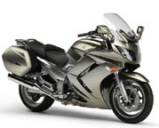

- Inicio
- Motos Deportivas
- Motos Naked
- Motos Deportivas Junior
- Calle
- Motos tipo Turismo, Sport-Turismo y Trails
- Motos Custom y Choppers
- Motos Scooters, MaxiScooters y Ciclomotores
- Motos Cross y Enduro
- Motos Supermoto
Tipos de motos
- Cuatrimotos y Motos Triciclos
- Motos de Nieve
- Minimotos o "pocket Bikes"
- Motos de "trial"
Otras motos


Motos tipo Turismo, Sport-Turismo y Trails
Diseñadas para viajar
Una Moto de touring (turismo) es ideal para realizar largos viajes. Suelen ser de media o gran cilindrada, y en la mayoría de las ocasiones vienen con 2 maletas a ambos lados de la parte trasera de la moto.
Existen tres grandes subsegmentos:
Turismo, que se utilizan para viajar por ruta. Tienen una posición de conducción relajada, con el cuerpo más o menos derecho y por lo general vienen equipadas con maletas y parabrisas alto. Ejemplos: BMW R1150RT, Honda Goldwing, etc. Sport-Turismo, que como su nombre indica están entre las motos turísticas y las deportivas, uniendo cualidades de ambos estilos. Todas incluyen Carenados. Ejemplos: Yamaha FJR, Yamaha FZ1 S, Yamaha FZ6 S, Yamaha TDM, Kawasaki ER6F, Suzuki V-Strom, etc. Motos "Trail", que son motos que están adaptadas para transitar tanto en ruta como fuera de ella. Son una mezcla entre las motos de carretera y las motos de campo y su máxima virtud es su versatilidad. Ejemplos: BMW R1200GS, Suzuki Freewind, Honda Transalp, Kawasaki Versys, Varadero, Africa Twin, Dominator, etc.

Muchos modelos de turismo incluyen la "T" en el nombre del modelo para indicar su utilidad, la mayoría de marcas conocidas como Yamaha, Honda, BMW y otras cuentan con este tipo de motos dentro de su extenso catálogo.
Ejemplos de estas motos son: Goldwing, Varadero, TDM, V-STROM, FJR, SuperTenere, Transalp, Africa Twin, Dominator, Pacific Coast.